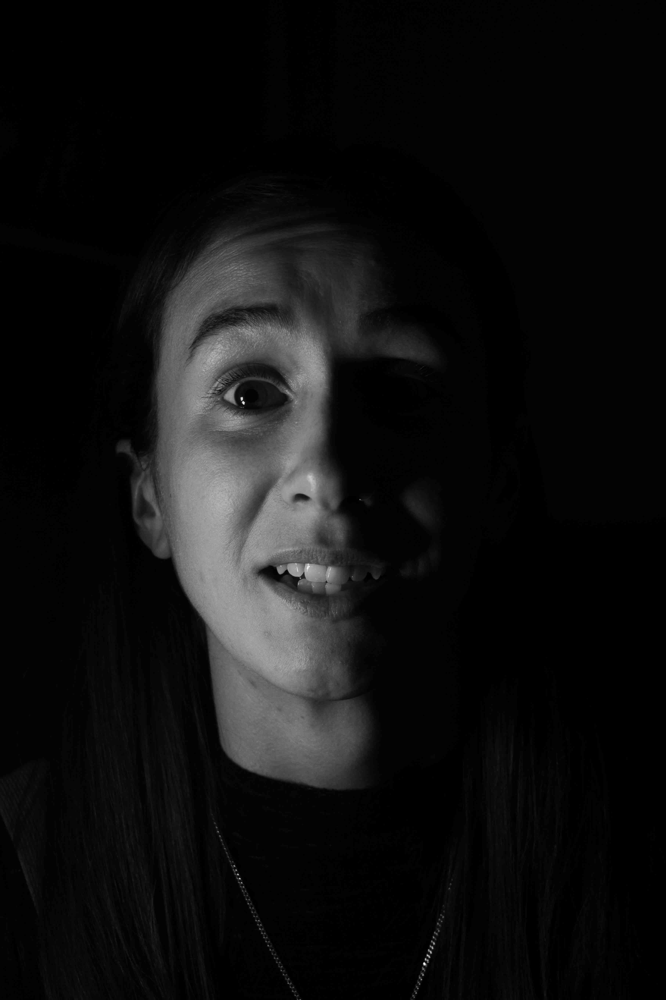
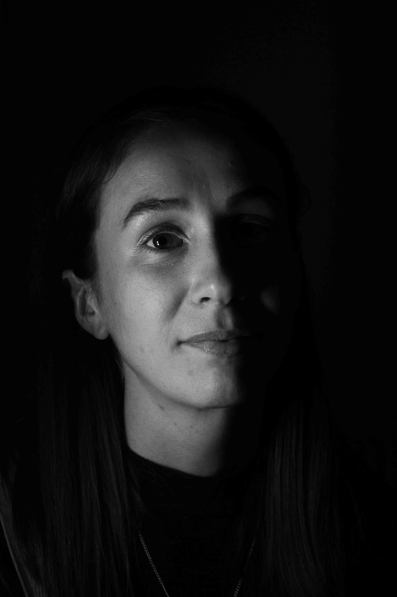

Listen to this page:
Danielle is a lawyer-turned-environmentalist, currently studying marine environmental protection.
"Exasperated"

She tells me she feels like rolling her eyes with fury, “it seems crazy that there’s so much that can be done to make things better, but there are a small number of powerful people at the top of the pyramid that do nothing.” She explains that she can’t let herself think about it too much, “if you sat down and thought about the state of the world and the inaction it would be too easy to say things are too bad, throw in the towel… It’s kind of overwhelming.”
"Disappointed"

“We know so much, we’ve made huge progress in scientific understanding – the knowledge is there and we have capacity to make bigger changes, but we keep missing the low-bar targets we set”, she says. She explains that she’s disappointed with those in power who are not facilitating the change the planet needs, “it comes down to the fact that these people don’t benefit from the changes they need to bring in, so they don’t bother.”
"Optimistic"

Despite her frustration and disappointment, she remains optimistic, “there are people in the world who dedicate their lives to facilitating positive change. I actively choose to see the good things and try not to pay attention to the bad things”. She is acutely aware of her privilege, too: “lots of people have no choice – they face the horror of environmental crises in daily life or work”, but she explains that she can choose to stay positive and keep fighting, “it’s self-preservation, isn’t it?”
I ask her if she feels hope: “Yeah – definitely! I do think things will get worse for a lot of people, and there’s no hope in restoring the world to a pre-industrial state. But I believe we’ll be able to mould ourselves into whatever situation we’re in. I don’t think we’re on a linear path to things getting better at all, but I do have hope that positive things can be done. Eventually, things will get better – it’s just a shame we have to push things to this level of devastation to drive that change.”

Visit the project website